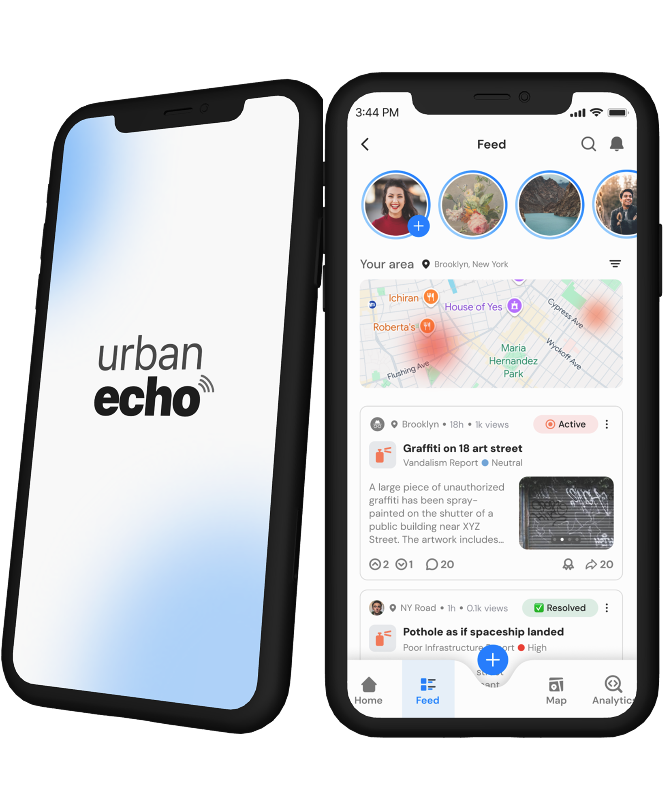
Urban Echo is a citizen-facing mobile application that bridges the communication gap between the city and its citizens when it comes to reporting civic issues. This application was developped during Protothon 2025.
UX Designer & Researcher
3 members
May 2025 (28-hour designathon)
Created an intuitive civic reporting app with empowering and transparency-focused features.
Design a citizen-facing mobile application that bridges this communication gap. The mobile app should:
There is a disconnect between municipal communication systems and user needs. Citizens face barriers when reporting local issues, often receiving no updates or follow-through. At the same time, governments struggle to manage fragmented reports, lacking a centralized and intuitive platform.
To uncover user pain points, I conducted competitive analysis of 311 apps, government portals, and forum sites like Reddit and Stack Overflow. I reviewed user complaints, took UI notes, and documented common frustrations with reporting tools. These insights helped guide our early ideation phase.
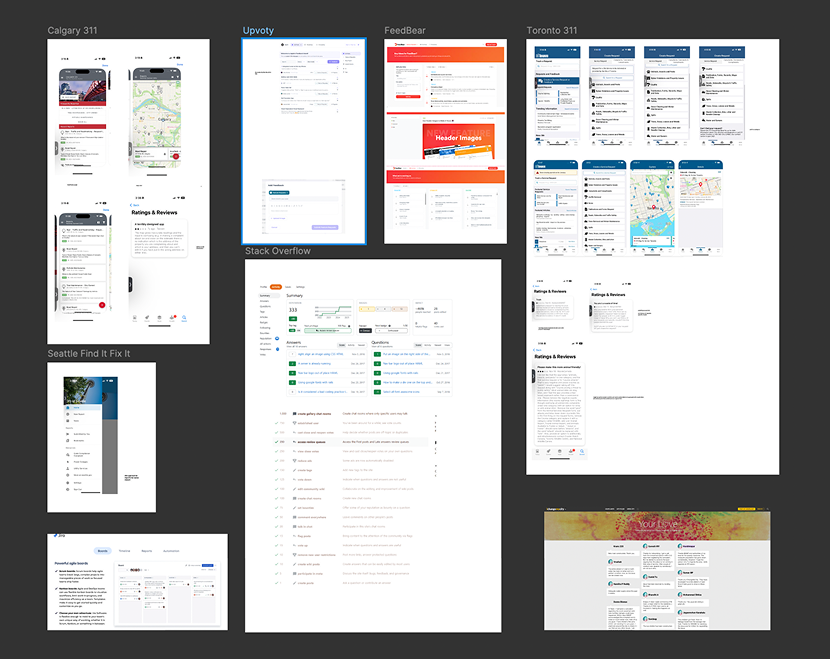
We compiled essential features based on our findings, prioritizing ease of use, transparency, and engagement.
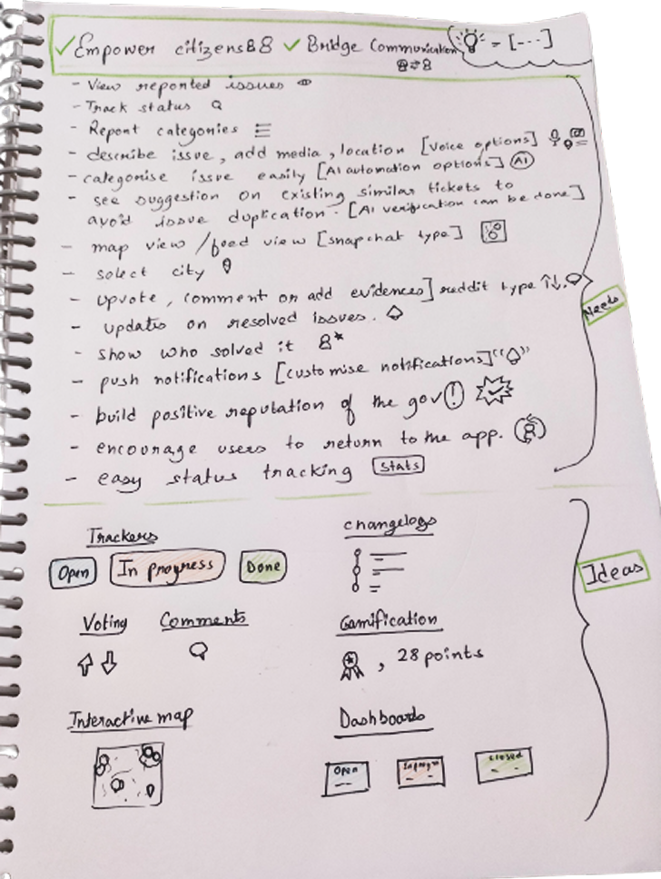
After numerous iterations, we developped high fidelity prototypes with branding and consistency in mind.
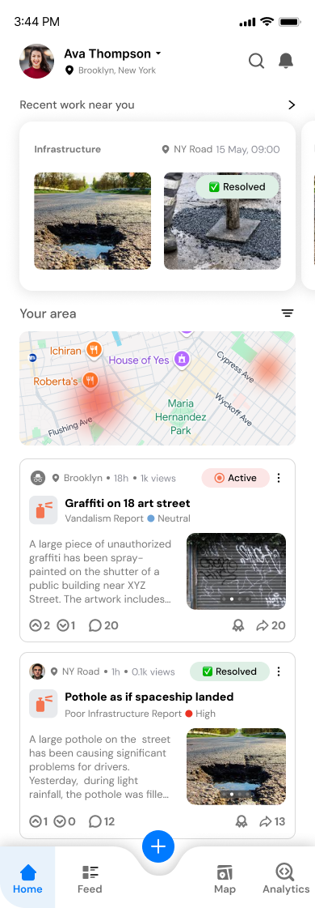
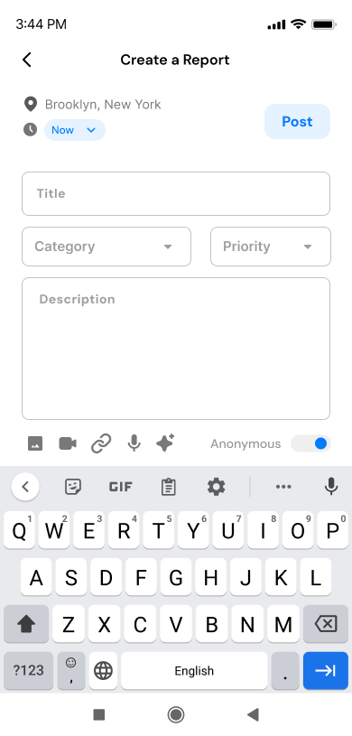
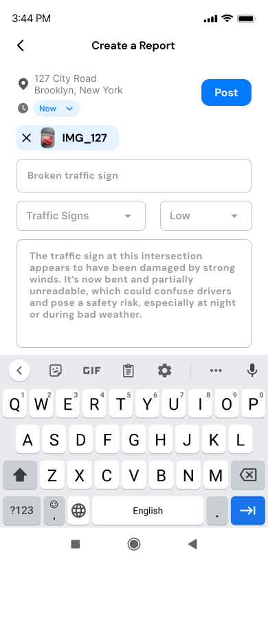
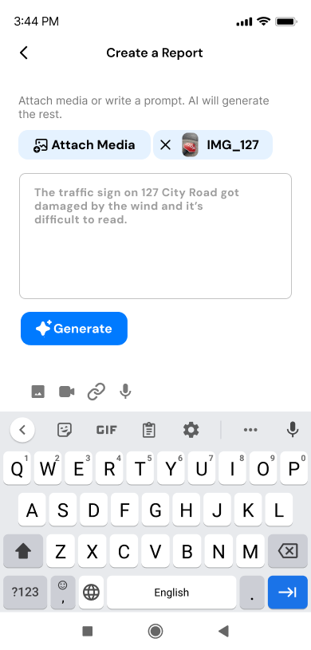
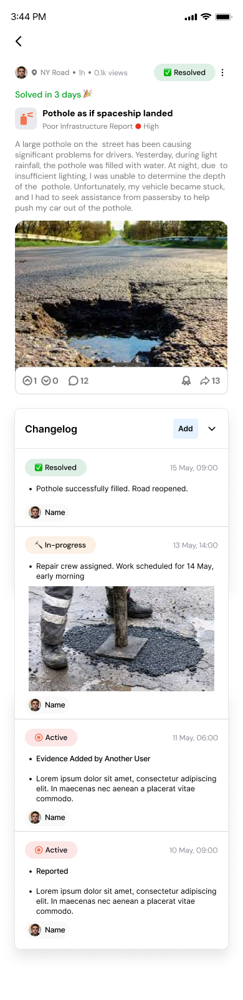
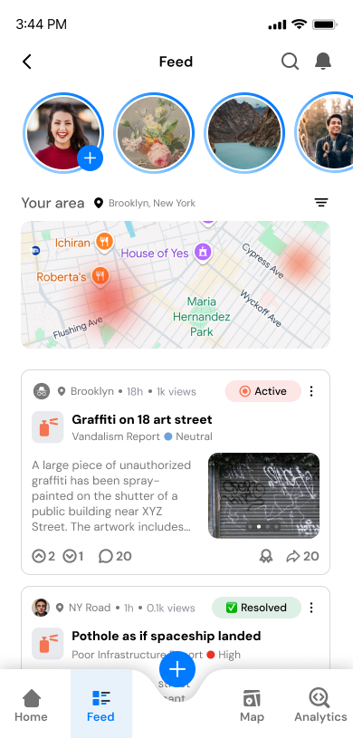
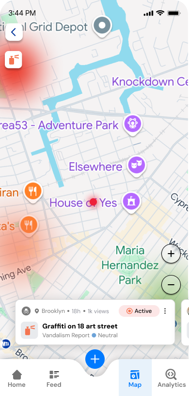
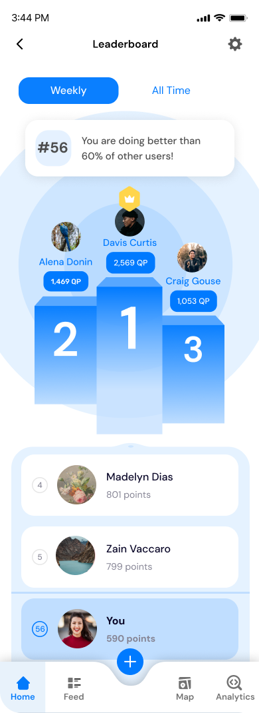
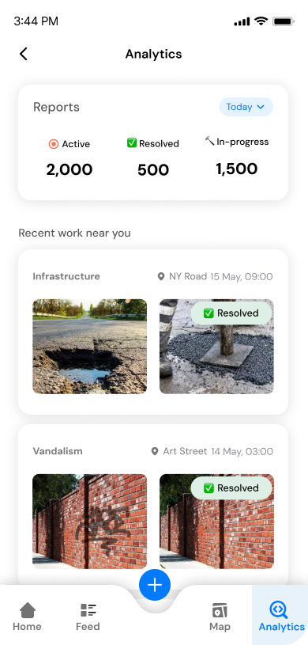
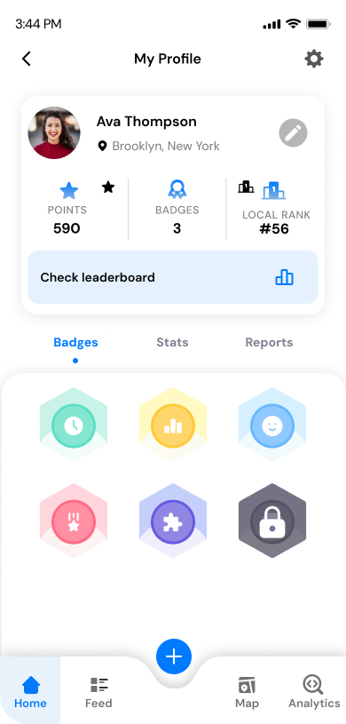
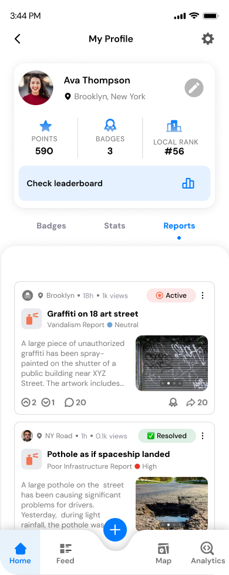
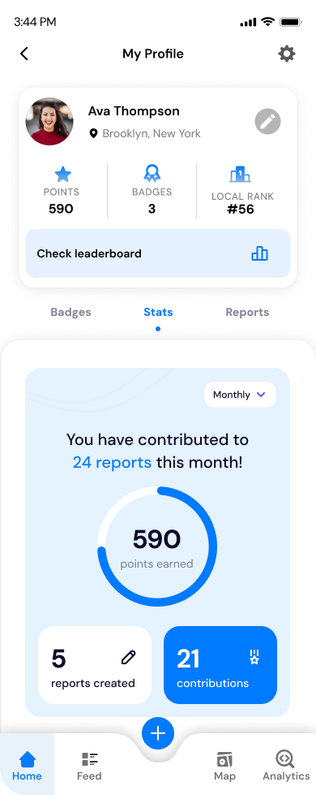
I went into this design jam alone, but I put a small team of 3 together on Discord. I led the secondary research and co-developed the UI in Figma. I also helped build the interaction logic and participated in team critique to refine our final design.
This project emphasized the value of empathy. Digging into real user frustrations reminded me how UX isn't always just about pretty UI, it's about solving real problems in meaningful ways.